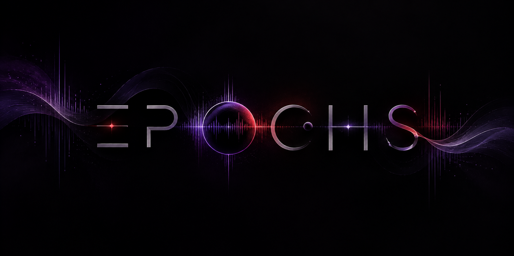
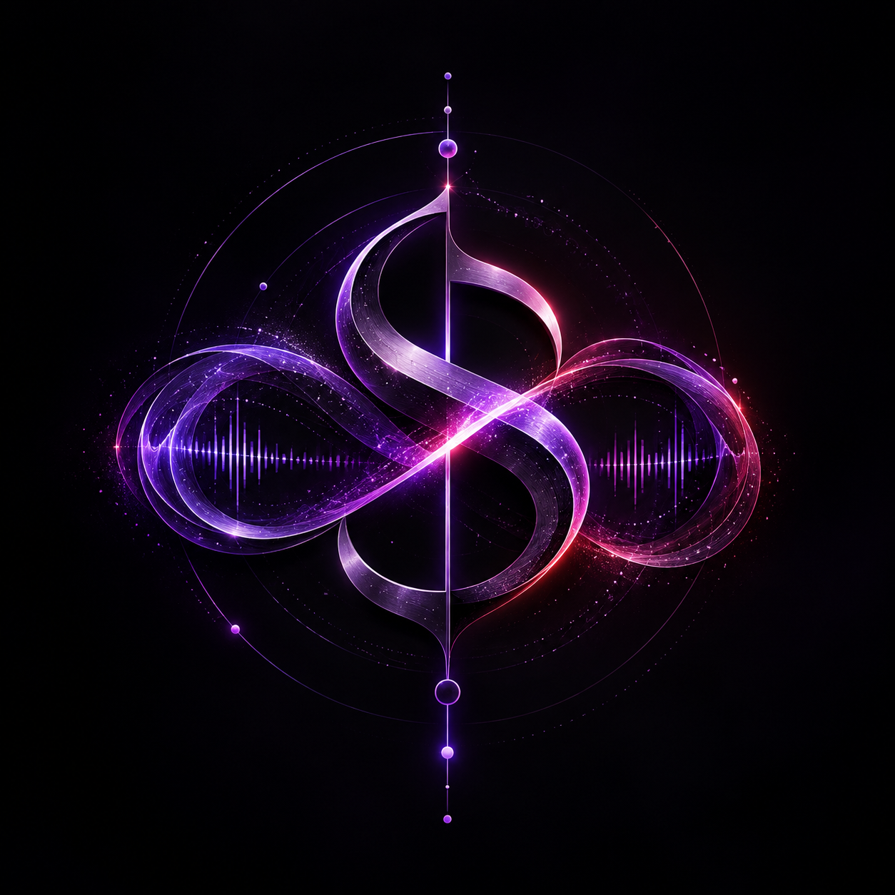
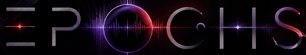

PRIMARY GENRE
—
—%model confidence



Upload a track or record one live. Epochs turns raw audio into a sonic fingerprint — genre, tempo, energy, waveform and Song DNA.
or choose an audio file from your device